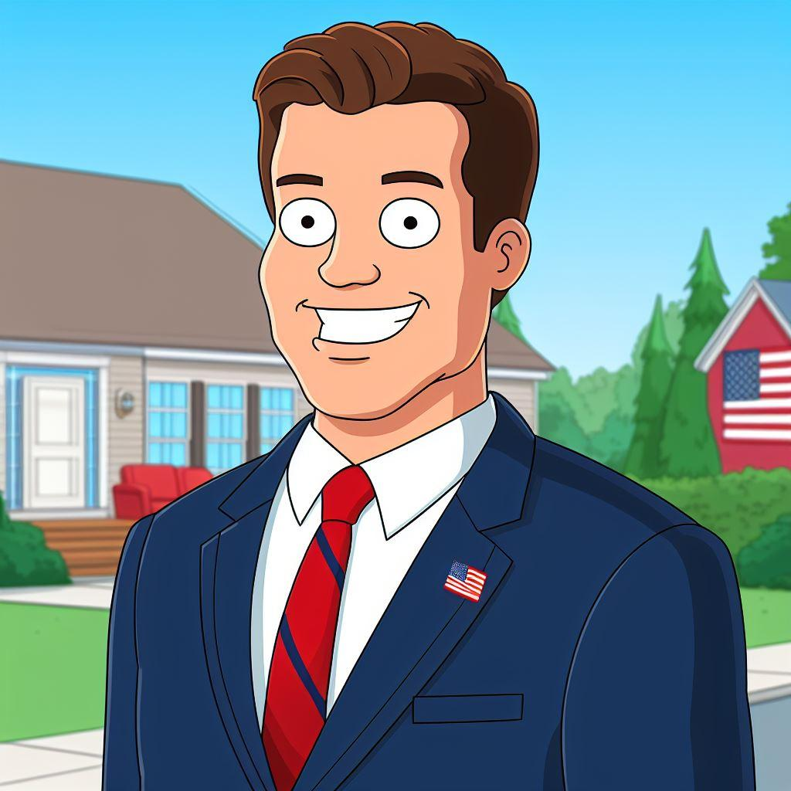
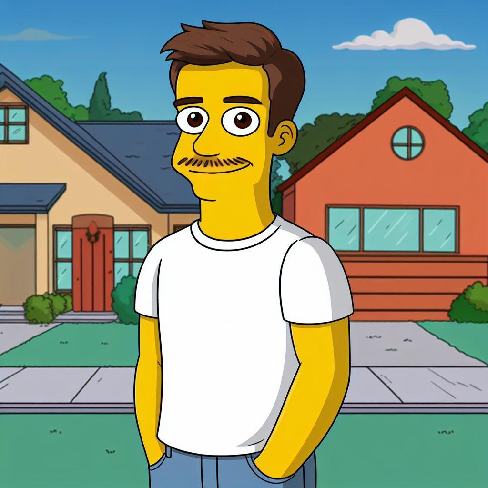
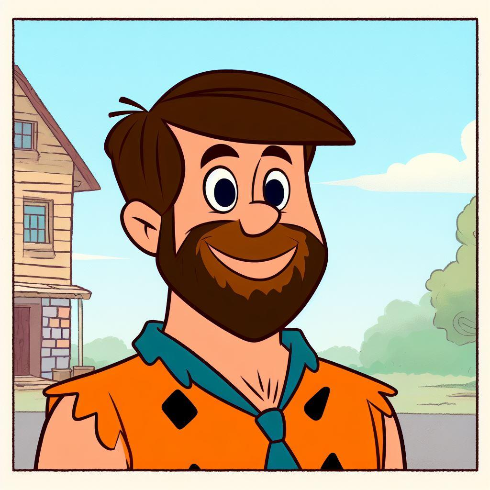
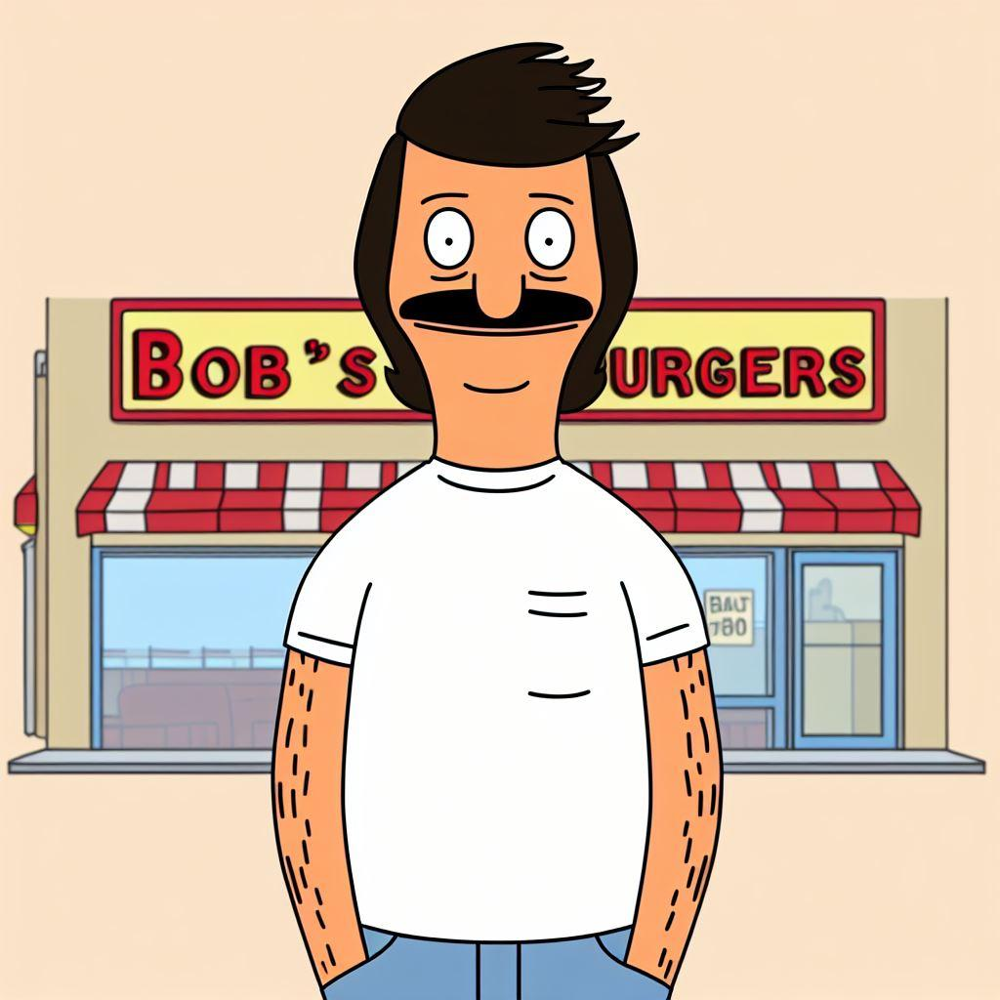
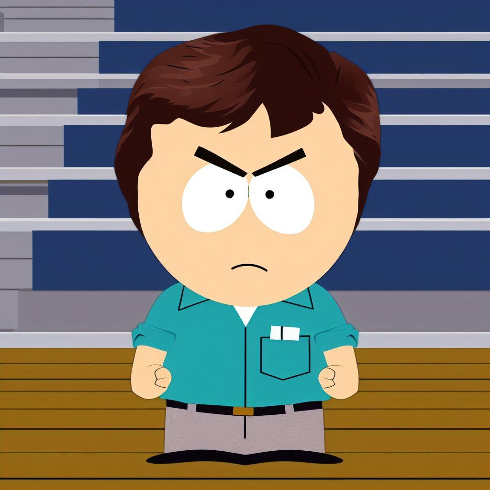
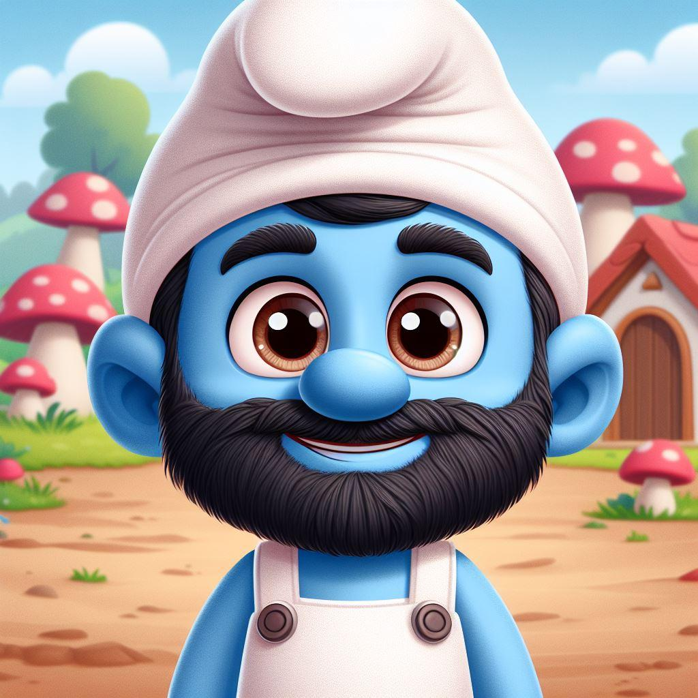
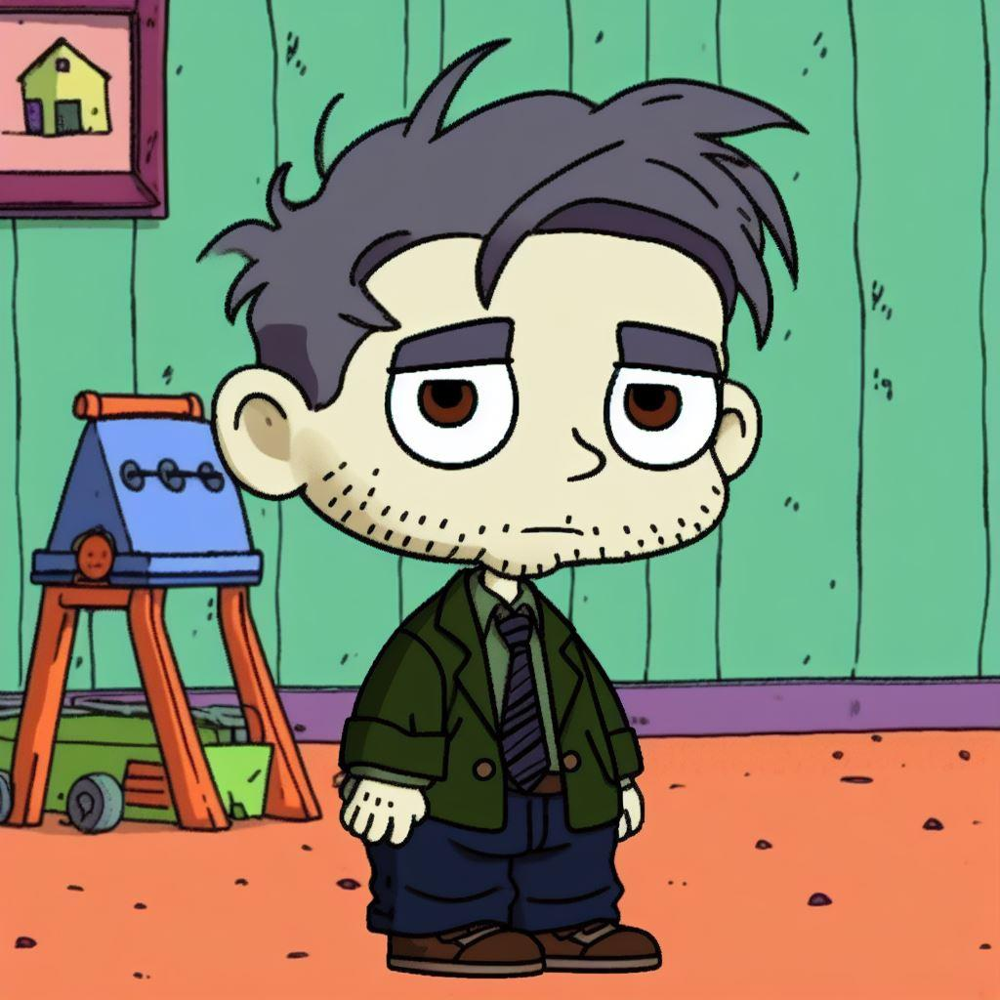
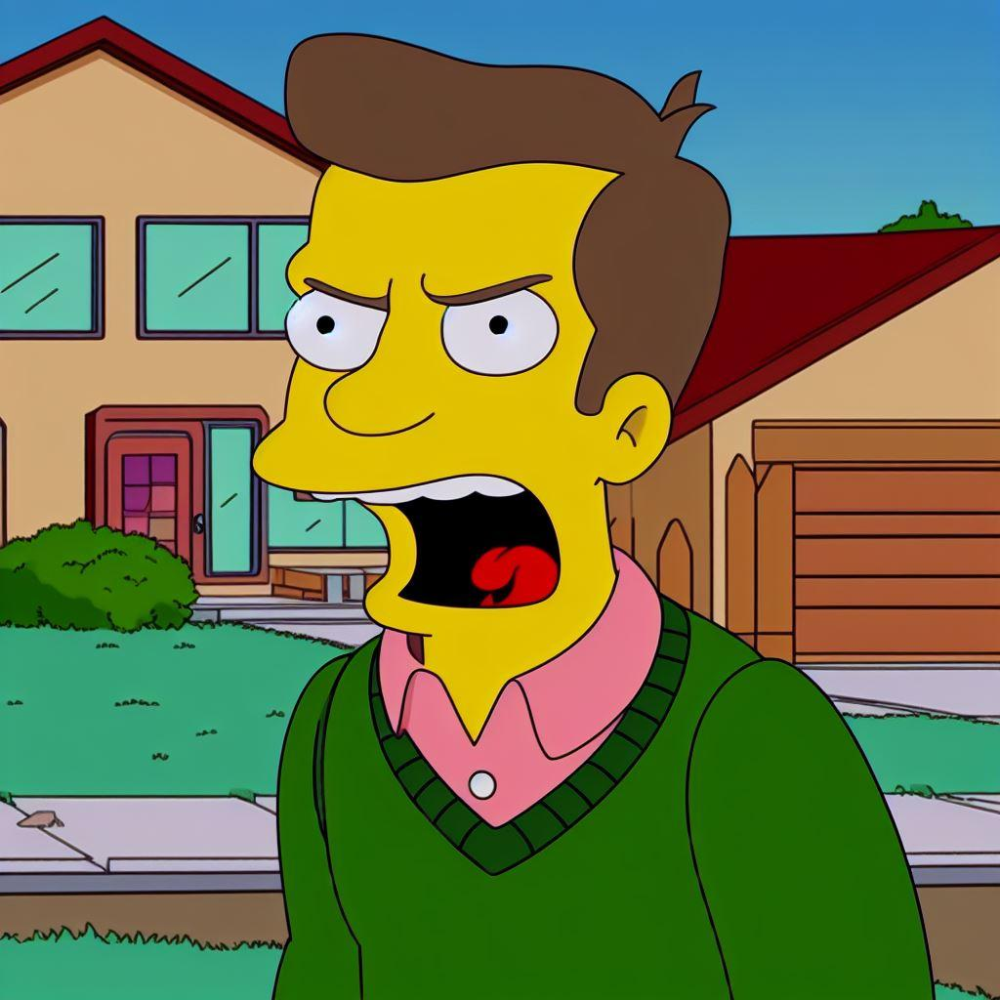

I could start this off with something corny along the lines of “Murphy's First Law states anything that can go wrong will go wrong but Murphy’s law couldn’t predict the chaos that has ensued in the league over the past two weeks”. But I won’t.
I have somewhat started creating a league website. It’s pretty cool. Still working on importing the historic data and what not from the google sheets(which is linked on the reference page)(and here: https://docs.google.com/spreadsheets/d/1Ocy-T5q_4vBebcP7xmrymC1pEQ_D9O9vhzb-mntfpYw/edit?usp=sharing ). I added a draft board to the google sheet along with historic rosters. The references page is the meat of the site for now. I have several league analysis sites linked. Most are as simple as plugging in the leagueID(which is provided on the reference page at the bottom in big numbers. Can’t miss it). I recommend FFHub and FantasyGenius. FFHub shows you your playoff odds, playoff machine, and schedule comparison. All league write ups I have been able to dig up are under the “Writeups” tab. The “Champions” and “Last Place” tabs are worth a peak. Still going to go back and add in record, points scored, points against, ppg , and possible players. I’m sure several of you are going to be upset about your picture and to that I say “too bad”. Jk. If you have a replacement pic you can send it to me. I won’t be replacing the Maddie pics. FYI. Onto this week..
What’s the difference between Potter and a baby? The baby will stop whining after a while. Dad time. The past two years have seen many of the league members become fathers for the first, second, and third time. May we be the first to congratulate you all. Now that that is over with, this week's theme will be cartoon dads. I have been playing around with AI art for the past couple weeks and incorporated it into this weeks note. The results are….something.
- Shain Collins

Stan Smith American Dad -
Good morning Shainay!
I got a feeling that it's gonna be a wonderful day
Devon Achane is back in his starting place
And Shain will be shooting to the top of the playoff race
Strong and unbeatable for much of the season, will Shain’s historic run to start the season lead to an epic collapse? Shain has had an alien(Achane) in his closet he has been waiting to unleash for weeks to start for only the second time this season. He disappointingly came out of the game after scoring just one fantasy point and now scoring 22 points while in Shain’s lineup. A matchup with me next week could potentially be a play in game for the playoffs but first Shain must take on fellow former 99% to the playoffs team…
- Josh Hudson -

Homer J Simpson The Simpsons - D’oh! Thats what Hud has to be thinking after his team failed to take advantage of Shain’s losses. Hud now plays, what I am guessing without doing any advanced analytics, the hardest remaining schedule. He still controls his own destiny. Jamar Chase losing Joe Burrow is the biggest “injury” Hud has had to deal with all year and Burrow is not even on his team. Don’t be surprised if they get tested after this article comes out. I love everything about this picture. Some of the following pictures didn't come out nearly as well as this one. - Ian Baro -

Fred Flinstone The Flinstones -
Yabba-dabba-doo!
Barrrrros Meet the Barrrrrrrros
They're the modern fantasy football dynasty
This year
They’re always staring at the clock
Waiting for players to come back from injury.
Ian did dress up as Fred Flinstone one year for Halloween and that is 100% where I got the idea from. Ian now faces the opponent he has the greatest winning percentage against in league history of anyone vs any other opponent. Clod. Whom he is currently 10-2 lifetime against.
- Lee Galt -

Bob Belcher Bobs Burgers -
I could see Galt’s alter ego after smoking the devil's lettuce being Bob. I can not see Bob doing the Griddy. I am sure Galt’s heart skipped a beat when Lamar went into the blue tent this past week but he came back out and did Lamar things. Galt faces a recently red hot t wood team before a looming week 13 matchup with number 2 Hud.
- Trey Wilder - Hank Hill King of the Hill -
Basically the only reason I wanted to this is so I could make myself Hank Hill and not Waivers.
- Michael Waivers

- Randy Marsh South Park -
The AI art started rearing it’s ugly head here. I tried and tried but it kept spitting out kids. Still not mad at it. Randy Marsh may be my favorite cartoon character of all time. He’s without question in the top 5. I also know it’s probably the only answer Waivers will accept therefore not giving me bad fantasy karma for when we play this week. Hey Waivers I aint hear no bell
I Didn't Hear No Bell - SOUTH PARK
- T Wood - Royce Freeman The Boondocks -
Breece hall is the player many of us refused
Jameer Giibs was the visual, the inspiration
That made t wood sing the blues
Grandpa(t wood) has been looking out for Huey(Hall) and Riley(Gibbs) as t wood has almost took himself out of caddy consideration with three straight wins. Keep it up Wood I believe in you.
- Taylor Hardee -

Papa Smurf The Smurfs -
Rex I am sure you are disappointed in your season, especially after I told you what your record would be if you had played Galts schedule instead of mine. But hey heres a cute pic of you if you were a smurf.
- Mark Potter -

Stu Pickles Rugrats -
Again I was very disappointed that the AI wouldn’t make this an adult. I am not disappointed in the picture though. Potter used his FAAB budget this season similar to how the Pickles budgeted for diapers. Sparingly. The Pickles had a reason, Potter was saving for the playoffs. Which he has no chance of making and no players worth keeping.
- Cody Clodfelter

- Ned Flanders The Simpsons -
Realistically Clod is the farthest thing from Ned Flanders. His team will need answered prayers to not be the Caddie at the end of the year.